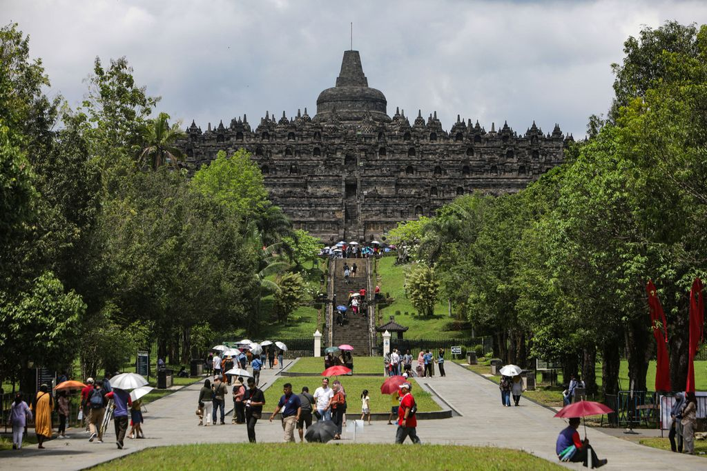

| Nama Tempat |
Lokasi |
Deskripsi |
Gambar |
| Labuan Bajo |
Nusa Tenggara Timur |
Labuan Bajo adalah nama sebuah pelabuhan kecil yang terletak di Nusa Tenggara Timur, pintu gerbang menuju obyek wisata terkenal bernama Pulau Komodo dan keajaiban pulau lainnya. |
 |
| Borobudur |
Magelang, Jawa Tengah |
Borobudur merupakan model alam semesta dan dibangun sebagai tempat suci untuk memuliakan Buddha sekaligus berfungsi sebagai tempat ziarah untuk menuntun umat manusia beralih dari alam nafsu duniawi menuju pencerahan dan kebijaksanaan sesuai ajaran Buddha. |
 |
| Raja Ampat |
Papua Barat |
Raja Ampat adalah keindahan bawah lautnya. Warna-warni terumbu karang dan hutan karang yang luas menciptakan pemandangan bawah air yang menakjubkan. Raja Ampat juga dikenal sebagai salah satu tempat dengan keanekaragaman hayati terkaya di dunia. |
 |